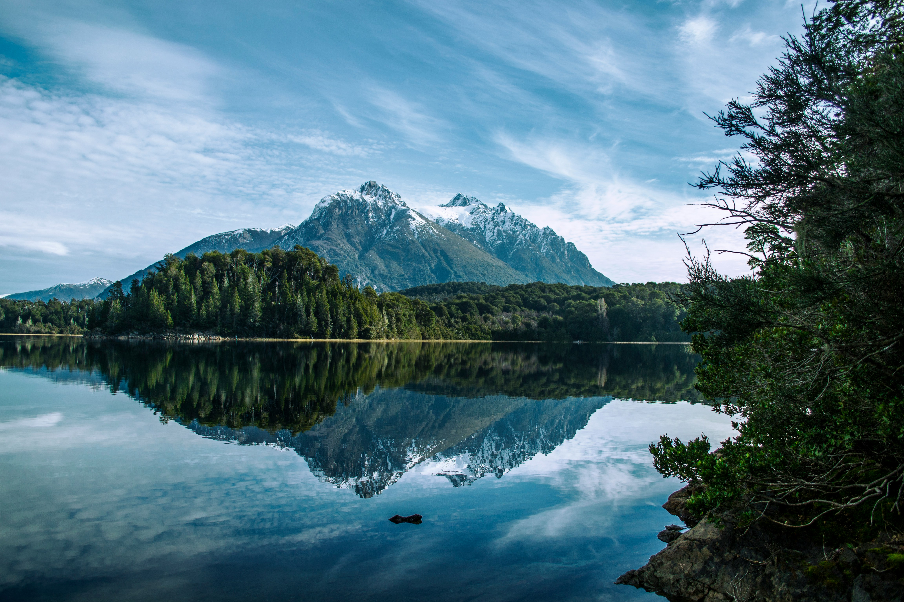

The Argentinian Switzerland
Bariloche is renowned for its
Swiss alpine-style architecture
and its chocolate, which is sold in
shops along Calle Mitre, the main
street. It is located near the Andes Mountains.

Where to Stay ?
Special Activities
You should enjoy the mutliples hikings, such as the one near the Nahuel Huapi National Park, or the Circuito Chico which provides a breathtaking view of the landscape. You should also definitely rent a car in order to pursue the 7 lakes route to discover even more wonderful panoramas. To change from hikings, bikes are also available to be rent at the beginning of the Circuito Chico. Finally, a chairlift can bring you on the top of Cerro Campanario to observe one of the best 360° view of the city.